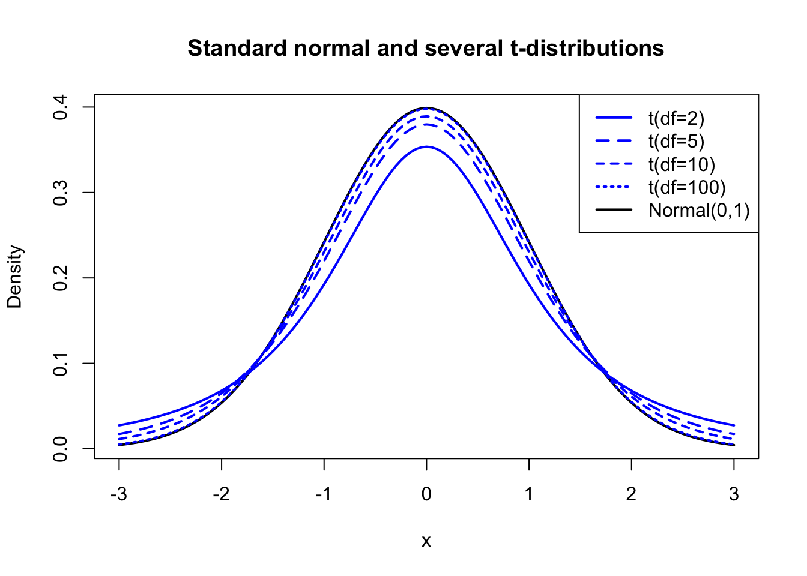

The Central Limit Theorem provides us with an incredible tool hobbled by one glaring drawback: we are required to know the true variance \(\sigma^2\) in order to estimate the range of likely values for the true mean \(\mu\). But in real-world applications, if we don’t know the true mean, then it is very unlikely that we would already know the true variance.
At first, this difficulty might seem trivial. We know that the sample-adjusted variance is an unbiased estimator of the true variance. We can estimate \(\sigma^2\) from the data as \(\hat{\sigma}^2 = \sum_i(x_i-\bar{x})^2⁄(n-1)\), so why can’t we use \(\hat{\sigma}^2\) in place of \(\sigma^2\)?
The answer is, we can, but it will create new difficulties. In the original CLT, \(\sigma^2\) was a fixed constant, a known value. When we estimate \(\sigma^2\) from the sample as \(\hat{\sigma}^2\), we are turning that fixed constant into another random variable. We could be too high, we could be too low; our distribution of sample means might be narrower than we think, or it might be wider than we think.
As a result, we are no longer drawing sample means from one distribution, but instead we must actually consider a “smear” of normal distributions each with slightly different variances. Those with smaller variances will create a narrow central peak. Those with larger variances will create thick “tails” at either end. The blend of all these possibilities will distort our distribution away from the true bell curve.
The difference is usually very small for larger sample sizes — we can estimate \(\sigma^2\) so precisely that the normal curve is barely “smeared” at all. But for small sample sizes, the difference is more pronounced. The new distribution shape is called the Student’s t-distribution, and it is controlled by a single parameter called “degrees of freedom” (we shall see why later). For univariate tests, the degrees of freedom is usually equal to your sample size minus one:
Code
#student's t-distributionplot(x=seq(-3,3,0.05),y=dnorm(seq(-3,3,0.05)),lwd=2,type='l',col='#000000',ylab='Density',xlab='x',main='Standard normal and several t-distributions')lines(x=seq(-3,3,0.05),y=dt(seq(-3,3,0.05),df=2),col='#0000ff',lwd=2,lty=1)lines(x=seq(-3,3,0.05),y=dt(seq(-3,3,0.05),df=5),col='#0000ff',lwd=2,lty="54")lines(x=seq(-3,3,0.05),y=dt(seq(-3,3,0.05),df=10),col='#0000ff',lwd=2,lty="33")lines(x=seq(-3,3,0.05),y=dt(seq(-3,3,0.05),df=100),col='#0000ff',lwd=2,lty="12")legend(x='topright', lwd=2,lty=c("F1","54","33","12","F1"),legend=c('t(df=2)','t(df=5)','t(df=10)','t(df=100)','Normal(0,1)'),col=c('#0000ff','#0000ff','#0000ff','#0000ff','#000000'))

Figure 10.1: Several t-distributions compared to the standard normal distribution
The exact derivation of this distribution requires some knowledge beyond the scope of this text, but I have placed a summary of the distribution and its properties in the appendices. For now, I ask that you blithely accept that it does in fact accurately solve our problem of having to estimate the true variance with the sample variance.
Modifying the Central Limit Theorem
Let’s review what the t distribution helps us to describe:
Data which we assume are drawn from a normal distribution
An unknown mean \(\mu\), which is the subject of a test or confidence interval
An unknown variance \(\sigma^2\), which we estimate from the data
The t-distribution will allow us to judge claims about the mean of the distribution while accurately adjusting for the fact that the variance is unknown.
And while the t distribution may seem limited in application, since it applies only to Normal distributions with unknown variance, we already learned in The Central Limit Theorem that almost any sample mean is approximately Normally distributed around the location of its true population mean.
So in fact, we can use the Central Limit Theorem in situations where the variance is not known, so long as we test it against the t distribution instead of the standard Normal distribution:
Note
Thet-adjustment to the CLT: Let \(X\) be a random variable with mean \(\mu\) and finite but unknown variance, and let \(\boldsymbol{x} = x_1,x_2,\ldots,x_n\) be a sample of independent observations of \(X\). Then,
Where \(\bar{x}\) is the sample mean of \(\boldsymbol{x}\), \(s_x\) is the sample standard deviation of \(\boldsymbol{x}\) and \(T_{n-1}\) is the cumulative distribution function of Student’s t distribution with \(n-1\) degrees of freedom.
Hypothesis tests and confidence intervals concerning the true mean
The use cases below use either the Normal distribution or the t distribution to make claims about the true mean of a population. Many different professional situations will require you to compute these tests and intervals: they are among the most common statistical procedures used by working professionals.
Notation
In all of the tests and intervals which follow, I will continue to use the symbols \(\mu\) and \(\sigma^2\) to represent the true mean and variance of a distribution (any distribution, not just a Normal distribution), and \(\boldsymbol{x}\) to represent a sample. In cases where we must compare two different samples, I will use the subscripts \(\mu_1,\mu_2,\sigma_1^2,\sigma_2^2,\boldsymbol{x}_1,\) and \(\boldsymbol{x}_2\). I will also use the common abbreviation for sample variance, \(s^2=\sum_i(x_i - \bar{x})^2/(n-1)\) . I will use \(z_q^*\) to denote the qth quantile of the standard normal distribution, that is, if \(Z\) is a random variable distributed Normally with mean 0 and variance 1, then \(\Phi(z) = P(Z \le z) = q\), and similarly I will use \(t_{q,df}^*\) to denote the qth quantile of the t-distribution with \(df\) degrees of freedom.
One-sample z-test and interval
This use case was previously described in The Central Limit Theorem, and is only reprinted here as a baseline for comparison.
Very rarely, we already know the true population variance \(\sigma^2\), and all we need estimate is the true mean \(\mu\) from a sample. If we have a null hypothesis for the mean \(\mu_0\), we can conduct a one-sample z-test for the mean using the following test statistic:
\[z = \frac{\bar{x} - \mu_0}{\sigma⁄\sqrt{n}}, \quad z \sim \textrm{Normal}(0,1)\]
Which suggests the following \(1 - \alpha\) two-sided confidence interval for the true mean:
\[ \textrm{CI}_{\mu,1-\alpha} = \bar{x} \pm z^*_{\alpha/2}\frac{\sigma}{\sqrt{n}}\] And the following \((1-\alpha)\) one-sided confidence intervals for the true mean:
Much more commonly, we must estimate \(\sigma^2\) from the data. If we have a null hypothesis for the mean \(\mu_0\), we can conduct a one-sample t-test for the mean using the following test statistic:
\[t = \frac{\bar{x} - \mu_0}{s⁄\sqrt{n}}, \quad t \sim T_{n-1}\] Which is the same as the z-test above, only replacing the known value of \(\sigma\) with \(s\) which we estimate from the data. Likewise, the two-sided confidence intervals are very similar:
\[ \textrm{CI}_{\mu,1-\alpha} = \bar{x} \pm t^*_{\alpha/2,n-1}\frac{s}{\sqrt{n}}\] As are the one-sided confidence intervals:
We also may be asked to estimate the true proportion at which something occurs from a sample of data. Imagine that instead of a continuous or discrete variable, you are observing a sample of a 1/0 indicator variable, that is, a Bernoulli variable which takes on a value of 1 for each success and 0 for each failure. We wish to know \(p\), the true proportion of successes, for which the natural estimator is the sample proportion: \(\hat{p} = (\sum_i x_i)/n\).
Note that the variance of the Bernoulli distribution is \(p(1-p)\) and from the basic properties of random variables we know that the variance of a sample mean of Bernoulli observations would be \(p(1-p)/n\). So here we have a case where a single parameter sets both the mean and the variance together. In such situations we do not need the t-distribution, which was built to address cases where estimating one parameter requires knowing the value of the other parameter. In other words, the original CLT using the Normal distribution is the best fit.
If we have a null hypothesis for the proportion \(p_0\), we may conduct a one-sample proportion test for the mean using the following test statistic:1
\[z = \frac{\hat{p} - p_0}{\sqrt{p_0(1-p_0)/n}}, \quad z \sim \textrm{Normal}(0,1)\]
The same concepts lend themselves to two-sided confidence intervals as well. Compare this to the “exact” binomial confidence interval in Exact confidence intervals — while that Clopper-Pearson interval is usually regarded as conservative (containing the true mean more often than its nominal confidence level), the following approximation is regarded as liberal (containing the true mean less often than its nominal confidence level):
These test statistics and confidence intervals are still approximations based on the Normal distribution, and become increasingly inaccurate for proportions very close to 0 or 1 and for low sample sizes. In some cases they may even produce impossible confidence intervals suggesting values for \(p\) less than 0 or greater than 1!
Two sample t-test, variances assumed to be equal
We also may be asked to estimate the true difference between two different population means, or to find out whether we have any evidence that the two populations are really different at all. While you could use a Kolmogorov-Smirnov test to compare their entire distributions (as in Identifying distributions), sometimes we are only interested in whether their means are different.
We must choose whether or not to assume that the variances of the two groups are equal. If we assume equal variances, we may conduct a two-sample t-test for a difference in means with “pooled variance”. Our first step is to compute a pooled sample variance, i.e. to estimate a single variance from both groups simultaneously. The formula below essentially weights the two samples’ variances by their sample sizes to create a blended (pooled) estimate:
If we assume that the observations from both groups all shared this same pooled variance, then we may compute the test statistic for the difference in means as:
\[t = \frac{\bar{x}_1-\bar{x}_2}{\sqrt{s_p^2/n_1 +s_p^2/n_2}}, \quad t \sim T_{n_1+n_2-2}\] Which suggests the following two-sided confidence interval for the true difference in means:
(Formulas for one-sided confidence intervals, and z tests for when the pooled variance is known ahead of time, can both be constructed by analogy to the prior subsections above.)
Two sample t-test, variances assumed to be unequal
The last remaining case we will treat here is when we are comparing two means but do not believe we can assume the variances of the two groups are the same.
As with all of the formuale in this section, the following test statistic is an approximation — here, of a very tricky distributional question called the Behrens-Fisher problem, which was only recently solved after 90 years of study. The approximation I will show is called the Welch test, and its first step involves computing a fractional “degree of freedom” parameter \(\nu\) (nu), which we estimate as follows:
There are still other situations you may encounter, such estimating the difference between two proportions, or a paired t-test in which each observation from one group has a natural analogous counterpart in the second group. These formulae can easily be found elsewhere, and if you understand how to apply the testing procedures above, you will readily comprehend the remaining cases as well.
Note: some software packages will automatically apply small-sample corrections which slightly improve upon the CLT’s accuracy, so their results may differ from yours with this formula.↩︎
Notice how the one-sided intervals for a mean are unbounded on one end, while for a proportion even the “one-sided” intervals are naturally bounded by 0 and 1.↩︎